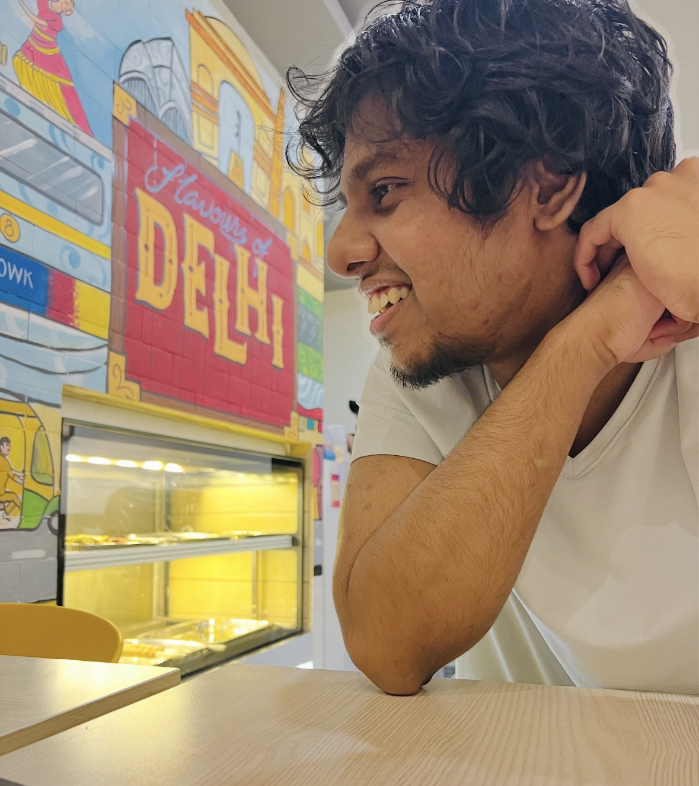

About

I’ve been making things for the web since 2010. Along the way that work has grown to include UI/UX design, research, full-stack development, and DevOps. These days I’m building ModelRiver, a developer platform that makes production AI workflows reliable, observable, and easy to reason about. I also built Hyperzoned, a minimal, AI-powered project manager built around one simple rule: three tasks a day.
What is ModelRiver?
After running several AI models in production, I kept seeing the same pattern. Integrations held up until a workflow went asynchronous, and then they turned fragile. Every provider brought its own SDK, authentication, response format, and ways of failing. Retries, observability, testing, and real-time updates all ended up as custom glue code scattered through the codebase.
ModelRiver is my attempt to bring order to that. It gives you one consistent layer for running AI workflows, with proper async execution, retries, observability, and local-first development, so you can experiment safely and ship production-grade AI with confidence.
What is Hyperzoned?
Should starting a task really mean opening a kanban board, checking what’s pending, and breaking the work into atomic subtasks before you begin? That always felt like too many steps.
In Hyperzoned, you create a project, set weekly or monthly goals, and add milestones within them. That’s the whole setup. It takes about as much effort as adding a card to a kanban board, and you do it far less often.
Each morning you click New Task and pick the goal and milestone you want to work on. If you’re picking up where you left off, your last choice is already selected. Hyperzoned’s AI then turns it into a focused task, broken into small, actionable steps. You can create up to three meaningful tasks a day across your projects, goals, and milestones: enough to make real progress, never enough to feel overwhelmed.
Earlier projects
Hyperzoned wasn’t my first product. Two of the earlier ones stand out.
Vieww.me let anyone build a single-page portfolio from a handful of details in under three minutes. It was featured on Product Hunt and found real traction, but it was eventually shut down for lack of a sustainable business model.
StickWithSEO.com analyzed the SEO performance of any webpage using a custom search-engine algorithm, back in 2016–17. Before that, I made a number of blogs, WordPress plugins, and themes.
How I ended up in development
It started early. In the early 2010s I loved experimenting with free website builders like Blogspot, WordPress, and Google Sites, and I published small projects on free .tk domains. I wanted my Blogspot themes to look more distinctive and professional, so I began learning HTML and CSS. What started as small theme tweaks soon became a real interest in web design and development.
Eventually I registered my first domain and hosted a WordPress site on HostGator, uploading files over FTP with FileZilla. WordPress introduced me to PHP, which was baffling at first with no programming background. Still, I managed small edits and customizations, and designed the graphics and logos for my sites myself.
Around the same time I was starting my higher studies, with only a basic grasp of C++ from school. I monetized my blog through Google AdSense, and I still remember receiving my first revenue cheque from Google. I posted tech articles every day, optimizing each one for search and keywords, and to my surprise it worked rather well.
In my second year of college things slowed down, and I put blogging on hold. A year later I discovered something fascinating: people were building remarkable web apps called Single Page Applications (SPAs). Curious, I took my first React course, Andrei Neagoie’s Zero to Mastery. At first I only watched, without coding along. But for my final-year project I built StickWithSEO.com, a PHP web app that analyzed a site’s SEO with basic scraping and algorithms. It was my first complete programming project, and it showed me how much I loved building software.
After that I went back to the React course, and this time I coded along. I picked up React, Node.js (Express), Git, and PostgreSQL quickly. Soon after, a friend and I started building a new web app, Vieww.me. That project taught me more than any course could, from frontend optimization to server deployment.
“I started coding to solve my own problems, and I never stopped learning.”
A little more about me
I’d call myself a jack of all trades and master of none, and I’m at peace with that. Over time I’ve come to see it as a strength, because it lets me explore many things instead of just one. With enough effort and focus, I can still make work that is meaningful and has real impact, and that’s what I’m doing now.
Outside of work, I enjoy films, photography (here’s one from more than a decade ago), and football. I also like keeping up with technology: programming, new gadgets, new ideas, AI, UI/UX design, and apps.